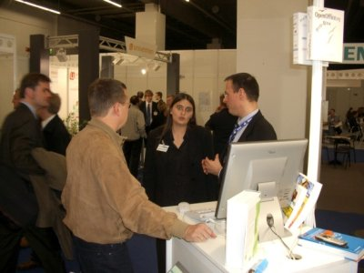
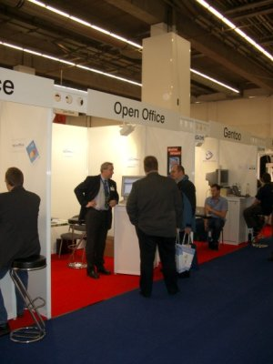

| Empfang |
|---|
| Startseite |
| Software |
| Produktinfo |
| Features |
| Download |
| CD-ROM bestellen |
| Rechtschreibprüfung |
| Dokumentation |
| Inhalt |
| Installationshandbuch |
| How-Tos |
| FAQs |
| Literatur |
| Support |
| Hilfe per Mail |
| Foren (extern) |
| Professioneller Support |
| Marketing |
| Marketing-Material |
| Veranstaltungen |
| Presse-Infos |
| Presse-FAQ |
| Über das Projekt |
| Geschichte |
| Meilensteine |
| Unterprojekte |
| Incubator |
| Whitepapers |
| Sponsoren |
| Mithelfen |
| ... aber wie? |
| Zuwendungen |
| Ansprechpartner |
| Sonstiges |
| Bildungsportal |
| Danksagungen |
| Links |
| Unsere Seiten linken |
| Rechtliches |
| Infos für Helfer |
LinuxWorld Conference & Expo 2004
OpenOffice.org war auf der LinuxWorld Conference & Expo 2004 gleich zweifach vertreten. An den Infoständen im org-Pavillion sowie im Greenhouse des LIVE Linux Verbands e.V. konnte sich das Messe-Publikum vom 26. - 28.11.2004 ausgiebig über die Office-Suite informieren.
Durch den hohen Anteil an Fachbesuchern aus dem Business-Umfeld waren auch die am häufigsten gestellten Fragen geprägt, die dem OpenOffice.org Team vor Ort gestellt wurden:
Hohes Interesse bestand vor allen Dingen an möglichen Migrationsszenarien zu OpenOffice.org, der Umgang mit vorhandenen Integrationen in anderen Office-Produkten und an den Themen Makroprogrammierung und Dokumentenaustausch.
Thomas Krumbein, Stefan Koehler, Jacqueline Rahemipour, Wolfgang Henderkes und Thomas Keup beantworteten zudem Fragen zu der mit Spannung erwarteten Version 2.0 und warben für den gerade gegründeten Verein "OpenOffice.org Deutschland e.V.".
Neben der PrOOo-Box, die mittlerweile zu einem festen Bestandteil der Messeauftritte geworden ist, fand insbesondere die OpenOffice.org-Bibliothek großes Interesse. Viele Messebesucher nutzten die Gelegenheit, in der ausgestellten Literatur zu blättern, um jeweils das passende Buch für sich selbst zu finden.
Die Hardware-Ausstattung für die Veranstaltung wurde dem Projekt von der Firma natural computing zur Verfügung gestellt.
Für die Vervielfältigung der PrOOo-Box-CDs danken wir der Quelltext AG.